Building a Weather App with Vanilla Javascript
March 26, 2018
Currently, in my coding journey, I’m working my way through Free Code Camp’s curriculum. One of my recent projects required me
to build a weather app that worked with an API of my choice to deliver the weather and location of an area based on the individual’s geolocation.
Another ‘user story’ I needed to meet was to allow users to switch between Fahrenheit and Celsius. This was my first introduction to working with an
API so I knew there was going to be a steep learning curve but I was excited at the chance to finally get some practical application of Javascript
and to build a functioning product.
I started my project by deciding what API I wanted to use for my project. These projects are built and submitted in codepens and to minimize the number
of external assets I’d be using I knew I wanted an API that came with weather icons. After doing a little research and seeing some feedback from fellow
campers I decided to use the OpenWeatherMap API. Setting up an account was as easy as it could be and their free accounts allow up to 7,200 calls per day
and caps calls per minute at 60. This obviously wouldn’t be ideal for a high traffic product for the sake of this project it would work splendidly.
Once I had that set up I was ready to get coding. I started out by building out my HTML. I didn’t get overly fancy with the architecture or design since
the emphasis of the build would be on the Javascript. The original HTML markup had placeholder information in the temp and location div’s so I could see
what I was styling but that was later removed since the app would be populating information for those divs on load. One thing I did inside of my HTML was,
and I’m sure this is standard practice for everyone else, I went ahead and placed id’s to the elements I knew I would want to target later with my Javascript.
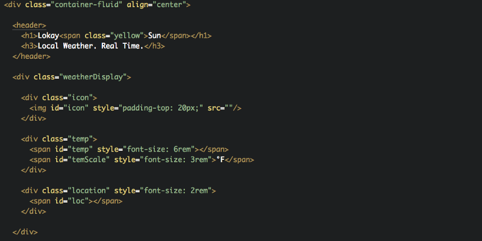
After the HTML was in place I took a few minutes to give it a little styling. Again, the main purpose of this project was to work with Javascript so the HTML & CSS got the bare minimum treatment. At first, I wanted to give each the same amount of attention but I ultimately was too anxious to get into the JS.
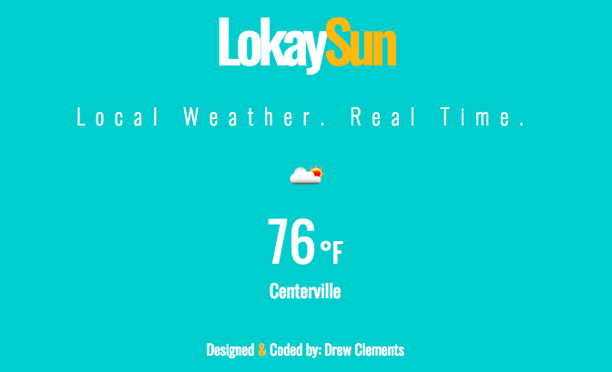
And now on to the fun stuff.
Now, this was literally my first time working with an API and with Javascript on this level so I had to do a lot of reading, watching and researching to complete this project. Unfortunately for me, 99.9% of the tutorials, forums, blogs, etc… on this project are all with jQuery. I have nothing against the language but I was dead set on using vanilla JS so the resources I had to help me through the process were limited.
I started off my JS by creating empty variables of the information I would want to call and manipulate later which were icon, temp, and location. I also created a variable called APPID and in it, I stored my API key so I could easily call it when needed rather than typing the 32 digit alphanumeric sequence each time.
Once I had my global variables set I wrote a function that would update the appropriate divs with the weather information the API would later retrieve. I was able to test that this was working by using strings and numbers since I hadn’t fully set up the API.
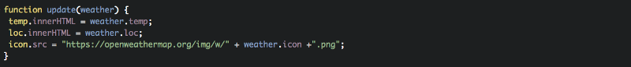
With the update function working properly I then set up a window.onload function that would gather the users’ geolocation using navigator.geolocation when the screen is loaded. Inside the navigator.geolocation I wrapped the latitude and longitude information inside a call for the function updateByGeo, which was the next step. The onload function also grabs the HTML elements that will need to be targeted.
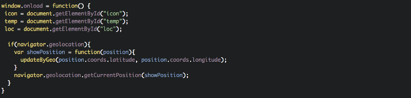
Now to build the updateByGeo function that will create the URL needed to use the OpenWeatherMap API to gather the weather information. This function is fairly simple. It simply creates a variable called URL and creates the URL needed for the API and concatenates the latitude and longitude needed, as well as your API key. At the end of the function, there’s a call for a sendRequest(URL) which takes the URL we just created earlier in the function. Building that sendRequest is next.
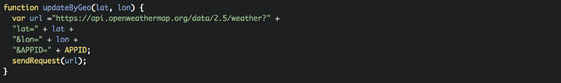
Building a JSON send request was new territory for me and I had to rely on a lot of outside resources to accomplish this part.
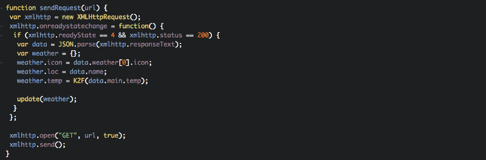
Essentially what happens in this function is it takes the url we created in the updateByGeo function which uses the user’s geolocation and sends it to OpenWeatherMap API and from there we can parse through the information we receive and deliver it back to the user.
Remember earlier where we built a function that would update the div’s with the appropriate information? Here is where that information comes in! Above in the weather.icon, weather.loc, and weather.temp objects you can see where we are retrieving the weather information from the API.
data.weather[0].icon, data.name, and data.main.temp are retrieving information from an array the API sends back once the user location is known. It looks like the image below. At the end of all of that data gathering, we’re telling the javascript to run our update function we created earlier. So now we’re populating the app with the user’s weather conditions based on their global positioning!
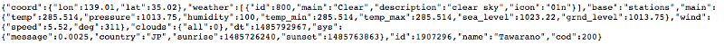
We still have a few things left to do though. OpenWeatherMap delivers temperature in Kelvin so we’ll need to convert that to either Celsius or Fahrenheit. We also need to allow the user to swap back and forth between Fahrenheit and Celsius.
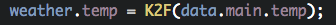
You may have noticed above that our data.main.temp was wrapped in a K2F function. That’s because I had already written the function before writing this. I’m no scientist or mathematician so for this I had to google the conversion formula. Once you have that formula you can simply drop it into a function with the call ‘return.’ One thing to remember is the default setting will give you numbers will give you decimal points for days so you may want to put the equation in a Math.floor.
Since we’re already in math mode we’ll go ahead and build functions to convert Celsius to Fahrenheit and vice versa. Again, a quick google search will give you the formula you need and then you can drop it into a function.
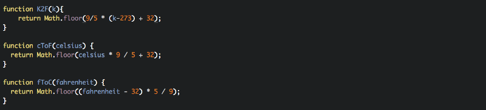
We're almost there!
All that's left is to build the toggle between Celsius and Fahrenheit. We'll do this with an if/else statement. We're telling the javascript that if you see one degree type in this specific div to change it to the other when clicked. That call should go both ways for the function.
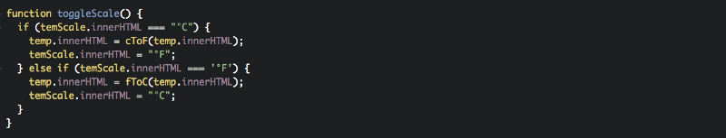
One tiny thing left. We need an event listener! We need to tell the javascript to listen for a specific event, in this case, a click, to run our toggle function. To me, ending this project with writing such a simple function felt like the cherry on top.
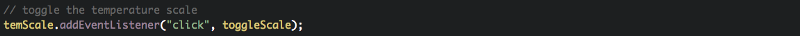
That’s it! We now have a functioning weather app built with vanilla javascript! I learned a lot in this project. Most notably, how to work with API’s; to an extent. I know each API works differently than others but finally being exposed to one and also using javascript in a practical sense rather than writing random loops or strings has been super informative and a huge learning experience.
If you’ve made it this far, thanks for taking the time to read this and I hope it has helped anyone who ended up here because they were looking for assistance.
My next project is a wikipedia viewer for Free Code Camp and there will be a follow up blog to that a well!
Return to Blog Next Article